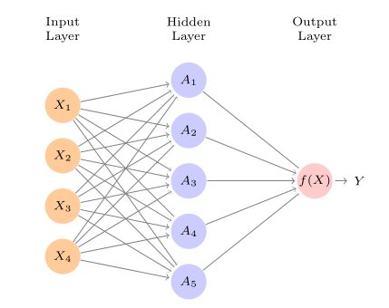
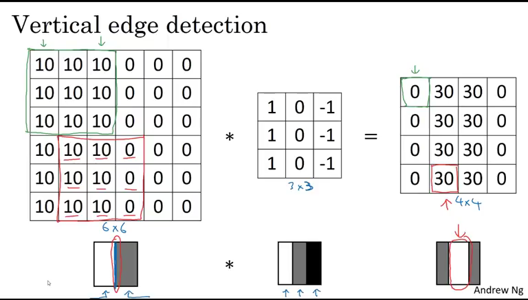

Aula 11
Deep learning
Introdução
Na aula de hoje, veremos o básico de um tipo diferente de modelo de aprendizado de máquina que alterou profundamente áreas como em visão computacional e processamento de linguagem natural: modelos de aprendizado profundo. Mais conhecidos como modelos de deep learning, seu aspecto característico é ser formado por diferentes camadas (layers) de células (ou neurons) que recebem diferentes inputs e os transformam aplicando funções não-lineares – daí o deep no nome, dado que essas camadas geralmente são empilhadas e acabam formando arquiteturas como a abaixo:

Deep learning é um tema vasto e inclui diferentes tipos de arquitetura de redes para atacar diferentes tipos de problema. O que cobriremos para introduzir o tópico, no entanto, é uma aplicação partilar cuja performance ajudou a popularizar o aprendizado profundo: a classificação de imagens. Para isso, veremos redes neurais convolucionais, que têm arquiteturas adaptadas para processar dados de que tem uma estrutura de vizinhança na qual ocorrências adjacentes importam para predizermos uma determinada característica – como a presença de padrões horizontais ou verticais de determinada cor, ou ainda círculos e curvas.
Redes neurais
Em sua forma mais simples, redes neurais nada mais são do que um conjunto de funções de ativação que recebem inputs (nossas features), as processam e entregam outputs. O papel de uma função de ativação, por sua vez, é o de multiplicar inputs pelos coeficientes, adicionando também o termo de viés (uma espécie de intercept) e aplicar uma função não-linear nela. Um exemplo de rede, adaptada do ITSL para 4 features para um problema de regressão no qual queremos predizer um \(Y\), tem como elemento básico funções de ativação \(A\) que transformam os inputs multiplicando eles por pesos e os transformando com funções de ativação (no caso, \(\sigma\)):
\[ A(X) = \sigma(w_0 + w_1x_1 + w_2x_2 + \dots + w_px_p) \]
\[ = \sigma\left(w_{0} \sum_{p=1}^P w_{p}x_{p}\right) \]
nessa equação, \(X\) são os \(P\) inputs (e.g., \(x_{1}, x_{2}, x_{3}, x_{4}\)); \(w_{p}\) indica os pesos ou coeficientes que multiplicarão cada um dos inputs; \(w_{0}\) é um peso para viés, como uma espécie de intercept. Se a nossa rede tiver \(K=4\) unidades (hidden units) em uma única camada, então a nossa rede terá a seguinte forma
\[ f(X) = \beta_{0} + \sum_{k=1}^K \beta_{k} A_{k}(X) \]
onde os \(\beta\) são também coeficientes a serem estimados (note que, como temos \(K=4\), isso é parecido como termos um intercep único, \(\beta_{0}\), e 4 coeficientes \(\beta_{k}\) que multiplicam as transformações de \(X\) feitas pelas funções de ativação).
O exemplo acima, como dá para notar, é ainda bastante simples. Redes neurais podem ter muitas camadas, que se relacionam de diferentes maneiras e com número de células diferentes, utilizando funções de ativação variadas – o que justamente permite que elas consigam modelar inputs os mais variados, dos tipos os mais diversos, como bases de dados com mais de 2 dimensões (como veremos no caso de um conjunto de imagens).
Como redes são treinadas
Há diferenças importantes na forma com que treinamos uma rede neural em relação ao que vimos anteriormente neste curso. Em primeiro lugar, no mais das vezes redes neurais usam lotes (ou batches) de uma amostra para treino, isto é, apenas parcelas menores das amostras de treino são passadas para a rede por vez, o que tende a ser mais rápido. Em vez do treino ser feito de uma só vez, portanto, a amostra de treino é passada ao modelo em pequenas parcelas – a volta completa da rede pela amostra de treino é chamada de época (ou epoch). Por conta do número grande parâmetros a serem estimados (cada um dos \(w\) e \(\beta\) que vimos antes), redes neurais comumente são treinadas usando-se mais de uma época, mas, quando mais épocas são utilizadas, maior o risco de overfitting.
Em segundo lugar, redes neurais podem usar diferentes algoritmos de otimização para encontrar os melhores parâmetros para uma dada tarefa. A principal especificidade aqui é que o processo de ajuste de parâmetros mais utilizado em aplicações é feito de trás para frente (algo chamado de backpropagation). Após cada batch, a rede faz predições e calcula alguma métrica de validação para avaliar seu desempenho e, do último à primeira camada, vai fazendo ajustes nos parâmetros de forma a corrigir desvios.
Finalmente, por terem uma estrutura tão mais complexa do que a de modelos tradicionais de aprendizado de máquina, redes neurais acabam dependendo de uma quantidade maior de dados para serem treinados de forma eficiente.1
1 Há exceções aqui, além de práticas como a de ajustar modelos base já treinados em bases grandes de dados para resolver tarefas mais específicas, estas passadas a partir de amostras menores. Em aprendizado profundo, essa prática de reutilizar um modelo para uma tarefa diferente daquela em que ele foi originalmente treinado é chamado de transfer learning.
Novo framework: Keras
Para esta aula, precisaremos utilizar algum framework específico para aprendizado profundo e, apesar de haver diferentes opções2, usaremos o Keras, que é um framework open-source que abstrai diferentes aspectos da criação e treino de modelos profundos, o que facilita bastante o nosso trabalho. Como veremos em seguida, trabalhar com o Keras é bastante similar tanto em R quanto em Python porque, em ambas as implementações, as peças básicas que temos que manipular são módulos, ou blocos, que podemos encaixar de diferentes maneiras para criar diferentes arquiteturas.
Instalação
Antes de começarmos a criar e a treinar redes neurais com Keras, precisaremos instalar o framework (a essa altura, espero que todos e todas já tenham feito isso em seus computadores pessoais, mas teremos que fazer o mesmo nos computadores em sala de aula).3 O processo é bastente simples, embora possa retornar diferentes tipos de erro:
3 No R, é também possível instalar o Tensorflow primeiro, biblioteca da qual o Keras depende, mas instalar o Keras diretamente produz o mesmo resultado.
# Instala o pacote Keras
install.packages("keras")
# Instala o Keras
keras::install_keras()
# Para quem usa OSX, talvez uma das opções abaixo seja necessário
keras::install_keras(method = "virtualenv")
keras::install_keras(method = "conda")# O ideal é seguir aqui: https://www.tensorflow.org/install/pip
python3 -m pip install tensorflowUma rede simples
Nesta aula, trabalharemos com um dos bancos de dados mais populares na área: o MNIST, que é uma base anotada com 60000 mil imagens de dígitos numéricos escritos a mão. Nosso objetivo, portanto, será o de predizer, a partir de imagens, os dígitos numéricos de representam. Exemplos de imagens do MNIST:
Para implementar uma rede neural com uma única camada oculta e 32 unidades4, podemos usar o seguinte código:
4 Na verdade, temos uma segunda para comprimir os resultados da primeira.
library(keras)
# Carrega as imagens do MNIST
mnist <- dataset_mnist()
# Separamos 5 mil imagens para validacao
X_treino <- mnist$train$x[1:55000,,]
X_validacao <- mnist$train$x[55001:60000,,]
X_teste <- mnist$test$x
y_treino <- mnist$train$y[1:55000]
y_validacao <- mnist$train$y[55001:60000]
y_teste <- mnist$test$y
# Aqui, precisamos alterar a estrutura da matriz que armazena os dados
# (28 x 28 pixels cada uma possui)
X_treino <- array_reshape(X_treino, c(nrow(X_treino), 28, 28, 1))
X_validacao <- array_reshape(X_validacao, c(nrow(X_validacao), 28, 28, 1))
X_teste <- array_reshape(X_teste, c(nrow(X_teste), 28, 28, 1))
# As cores são representadas de 1 a 255
# Com esse passo, deixamos todas variarem de 0 a 1 (como scale)
X_treino <- X_treino / 255
X_validacao <- X_validacao / 255
X_teste <- X_teste / 255
# Converte os targets para one-hot
y_treino <- to_categorical(y_treino, num_classes = 10)
y_validacao <- to_categorical(y_validacao, num_classes = 10)
y_teste <- to_categorical(y_teste, num_classes = 10)
# Define a arquitetura do modelo
model <- keras_model_sequential()
model %>%
layer_dense(units = 32, activation = "relu", input_shape = c(28, 28, 1)) %>%
layer_flatten() %>%
layer_dense(units = 10, activation = "softmax")
# Compila o modelo
model %>% compile(
optimizer = "adam",
loss = "categorical_crossentropy",
metrics = c("accuracy")
)
# Treina o modelo
model %>% fit(
x = X_treino, y = y_treino,
validation_data = list(X_validacao, y_validacao),
epochs = 10
)
# Faz predicoes na amostra de teste
model %>%
evaluate(X_teste, y_teste)import numpy as np
from tensorflow import keras
# Carrega as imagens do MNIST
(X_treino, y_treino), (X_teste, y_teste) = keras.datasets.mnist.load_data()
# Separamos 5 mil imagens para validacao
X_treino, X_validacao = X_treino[:55000], X_treino[55000:]
y_treino, y_validacao = y_treino[:55000], y_treino[55000:]
# Aqui, precisamos alterar a estrutura da matriz que armazena os dados
# (28 x 28 pixels cada uma possui)
X_treino = X_treino.reshape(55000, 28, 28, 1)
X_validacao = X_validacao.reshape(5000, 28, 28, 1)
X_teste = X_teste.reshape(10000, 28, 28, 1)
# As cores são representadas de 1 a 255
# Com esse passo, deixamos todas variarem de 0 a 1 (como scale)
X_treino = X_treino / 255
X_validacao = X_validacao / 255
X_teste = X_teste / 255
# Converte os targets para one-hot
y_treino = keras.utils.to_categorical(y_treino, 10)
y_validacao = keras.utils.to_categorical(y_validacao, 10)
y_teste = keras.utils.to_categorical(y_teste, 10)
# Define a arquitetura do modelo
model = keras.models.Sequential()
model.add(keras.layers.Dense(32, activation="relu", input_shape=(28, 28, 1)))
model.add(keras.layers.Flatten())
model.add(keras.layers.Dense(10, activation="softmax"))
# Compila o modelo
model.compile(optimizer="adam", loss="categorical_crossentropy", metrics=["accuracy"])
# Treina o modelo
model.fit(X_treino, y_treino, batch_size=64, epochs=10, validation_data=(X_validacao, y_validacao))
# Faz predicoes na amostra de teste
model.evaluate(X_teste, y_teste)O código é extenso e contém muitas coisas importantes. A primeira parte importante é o pré-processamento das imagens, que discutiremos mais adiante – precisamos transformá-las em um formato apropriado. Mais importante, no entanto, precisamos definir a arquitetura do modelo e, para isso, usamos a função/classe sequential que é a base para empilharmos diferentes camadas para formar uma rede. No caso específico, definimos uma camada de inputs que espera recebê-los com as dimensões \((28, 28, 1)\) (imagens em cinza de 28 por 28 pixels); depois definimos uma camada oculta com 32 unidades, com a função de ativação ReLU (com ela, valores negativos serão censurados em 0); depois, dado que os dados têm um formato de duas dimensões, usamos uma camada de compressão para transformar os outputs anteriores em vetores, estes passados para a camada de outputs que retorna as probabilidades de cada imagem serem de um dado dígito.
Novamente, a rede que definimos anteriormente é bem simples e pode ser melhorada com mudanças simples, como aumentar o número de unidades (de 32 para 128 ou 256, por exemplo), ou ainda adicionar mais camadas ocultas, o que permite à rede aprender padrões mais complexos. De toda forma, há algo melhor a se fazer, que é o que veremos em seguida.
Redes convolucionais
Um tipo de arquitetura bastante utilizada para problemas que envolvem imagens é de redes neurais convolucionais (CNN, na sigla em inglês). De específico, essas redes contêm camadas que aplicam transformações de convolução nos inputs que recebem. O processo é mais ou menos este: cada camada possui um número de filtros, que nada mais são do que componentes pequenos que se especializam em detectar determinado padrão, isto é, a isolar partes menores das imagens que recebem como inputs5; para tanto, o processo de convolução é utilizado para fazer com que os filtros se movimentem em diferentes partes da imagem até encontrar padrões que ajudem a minimizar os erros do modelo. Dessa forma, cada filtro, iniciado com pesos aleatórios, se especializará em determinar determinado tipo específico de padrão que, posteriormente, poderá ser agregado por camadas com número menor de unidades.
5 De forma mais técnica, cada camada convolucional precisa especificar o número de filtros que possuirá e as dimensões desses filtros (por exemplo, se será uma matrix \(5x\)).
Um exemplo mais intituivo de como filtros em camadas de convolução funcionam pode ser visto abaixo. Na primeira parte da matriz da esquerda (que representa uma imagem), é possível ver que todas as células contêm o valor 10, o que indica uma única cor sólida em toda a área; a matriz de pesos, \(3 x 3\), multiplica cada um desses valores e os agrega, retornando 0; em outra parte da imagem, indicada por vermelho, entretanto, o valor retornado da multiplicação das matrizes é 30, o que indica que há um padrão vertical presente. Em outras palavras, os pesos do filtro \(3x3\) do exemplo se especializaram em detectar padrões verticais e, sempre que os encontram, retornam um valor substantivo (que é retornado por uma matriz menor, \(4 x 4\)).

Implementar CNNs, portanto, passa por especificar uma camada convolucional com um determinado número de filtros de dimensões específicas. Usando Keras, um exemplo de aplicação de uma rede com essa arquitetura para predizer as imagens do MNIST segue abaixo:
# Define uma rede convolucional (filtro de 3x3)
model <- keras_model_sequential()
model %>%
layer_conv_2d(filters = 32, kernel_size = c(3, 3),
activation = "relu", input_shape = c(28, 28, 1)) %>%
layer_flatten() %>%
layer_dense(units = 10, activation = "softmax")
# Compila o modelo
model %>% compile(
optimizer = "adam",
loss = "categorical_crossentropy",
metrics = c("accuracy")
)
# Treina
model %>% fit(
x = X_treino, y = y_treino,
validation_data = list(X_validacao, y_validacao),
epochs = 10
)
# Avalia
model %>%
evaluate(X_teste, y_teste)# Define a arquitetura do modelo
model = keras.models.Sequential()
model.add(keras.layers.Conv2D(32, kernel_size=3, activation='relu', input_shape=(28,28,1)))
model.add(keras.layers.Flatten())
model.add(keras.layers.Dense(10, activation="softmax"))
# Compila o modelo
model.compile(optimizer="adam", loss="categorical_crossentropy", metrics=["accuracy"])
# Treina
model.fit(X_treino, y_treino, batch_size=64, epochs=10, validation_data=(X_validacao, y_validacao))
# Avalia
model.evaluate(X_teste, y_teste)O resultado dessa simples alteração de hidden layer é um aumento enorme em acurácia (que vocês poderão testar), e isso ainda não considera melhor possíveis como usar um maior número de unidades ocultas, aumentar o tamanho dos filtros ou adicionar mais camadas.
Processamento de imagens
Como vimos, é necessário processar imagens em um formato adequado para alimentar as redes. O formato que usamos no exemplo é um array, que é uma estrutura similar a de uma matriz que, de diferente, pode ter um maior número de dimensões – no nosso exemplo, tínhamos 60 mil matrizes com duas dimensões, o que forma um input de 3 dimensões \((60000, 28, 28)\).
Para facilitar o processo em imagens que temos em disco, o keras já fornece um conjunto de funções voltadas para a tarefa. Para carregar uma imagem do disco em escala de cinza, com uma resolução específica6, basta usar:
6 A imagem, caso não se adeque ao pedido, é transformada. Em alguns casos, no entanto, é melhor manter cores nas imagens, embora o processo de processamento e treino de redes fique mais complexo.
library(keras)
secao <- exemplo <- image_load("URBANO_757617.png",
color_mode = "grayscale",
target_size = c(200, 200)) %>%
image_to_array() %>%
normalize(axis = 1)
# Para visualizar o resultado
image(t(exemplo[1:200, 1:200, 1]), col = grey(seq(0, 1, length = 256)))import matplotlib.pyplot as plt
from tensorflow import keras
secao = keras.utils.load_img('URBANO_757617.png', color_mode='grayscale', target_size = (100, 100))
secao = keras.utils.img_to_array(secao)
secao = secao / 255
# Para visualizar o resultado
plt.imshow(secao, cmap="gray")
plt.show()Para o Projeto 2 (e para qualquer projeto real), carregar múltiplas imagens salvas em uma pasta. Uma forma de fazer isso é usar a função do Keras image_dataset_from_directory, que, a partir de uma pasta onde imagens de diferentes categorias estejam em diferentes sub-pastas, as carrega e já as transforma para um formato adequado para análise – não é nem preciso especificar labels, ou fazer normalização:
# Importar pacote
library(keras)
# Carregar imagens
teste <- image_dataset_from_directory(
"mapas",
validation_split = 0.2,
subset = 'training',
label_mode = 'categorical',
seed = 44,
image_size = c(200, 200),
batch_size = 64
)from tensorflow import keras
treino, teste = keras.preprocessing.image_dataset_from_directory(
'mapas',
validation_split=0.2,
subset='both',
label_mode='categorical',
seed=44,
image_size=(200, 200),
batch_size=64,
)Coisas a notar neste código: especificamos que as imagens terão 200 por 200 pixels, mas podemos usar mais ou menos, a depender do quanto de informações quiseremos reter. Também precisamos especificar se o label (que será inferido a partir da estrutura de pastas que definimos) será categórico ou outro (manteremos essa opção para facilitar) e o percentual das imagens que ficará na amostra de teste (i.e., validation_split). Isso feito, podemos estimar um modelo usando apenas:
# Treina
model %>% fit(
teste,
epochs = 10
)
# Avalia
model %>%
evaluate(X_teste, y_teste)model.fit(treino, batch_size=64, epochs=10, validation_data=teste)
model.evaluate(teste)Indo além
O que vimos é apenas um exemplo ínfimo das ferramentas disponíveis de aprendizado profundo. Mais precisamente, vimos um tipo de arquitetura simples do Keras, que não é o único framework de deep learning, e não exploramos outros tipos de camadas que geralmente são úteis, como camadas de regularização (para evitar overfitting). Para quem tiver interesse e quiser se aprofundar no estudo de redes neurais, um bom ponto de partida é esse texto, que introduz didaticamente as diferentes formas de camada disponíveis no Keras (e em outros frameworks):